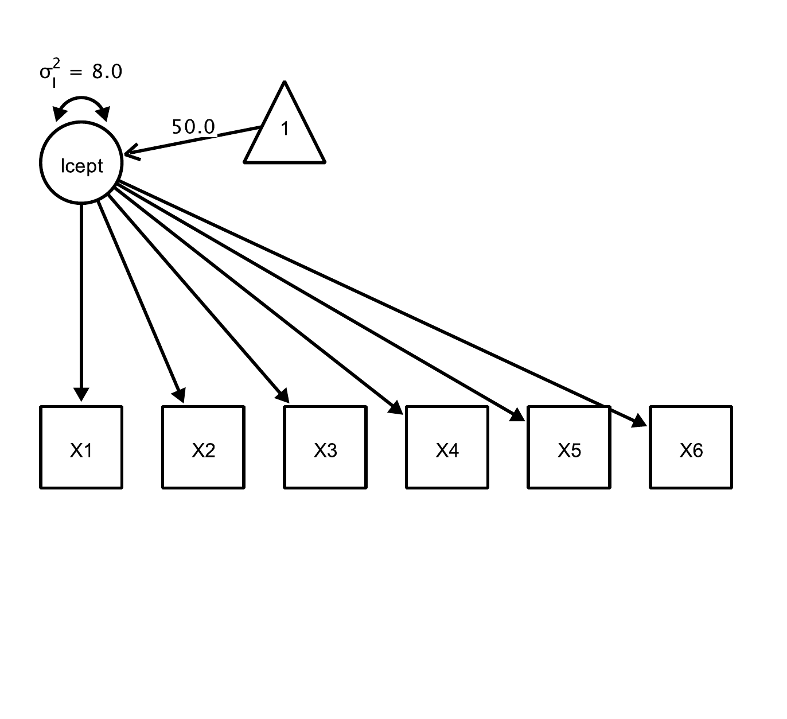
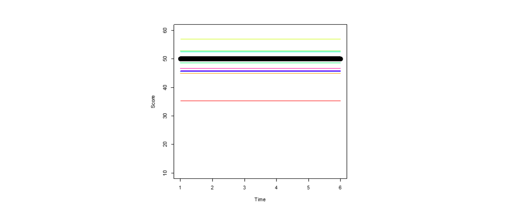
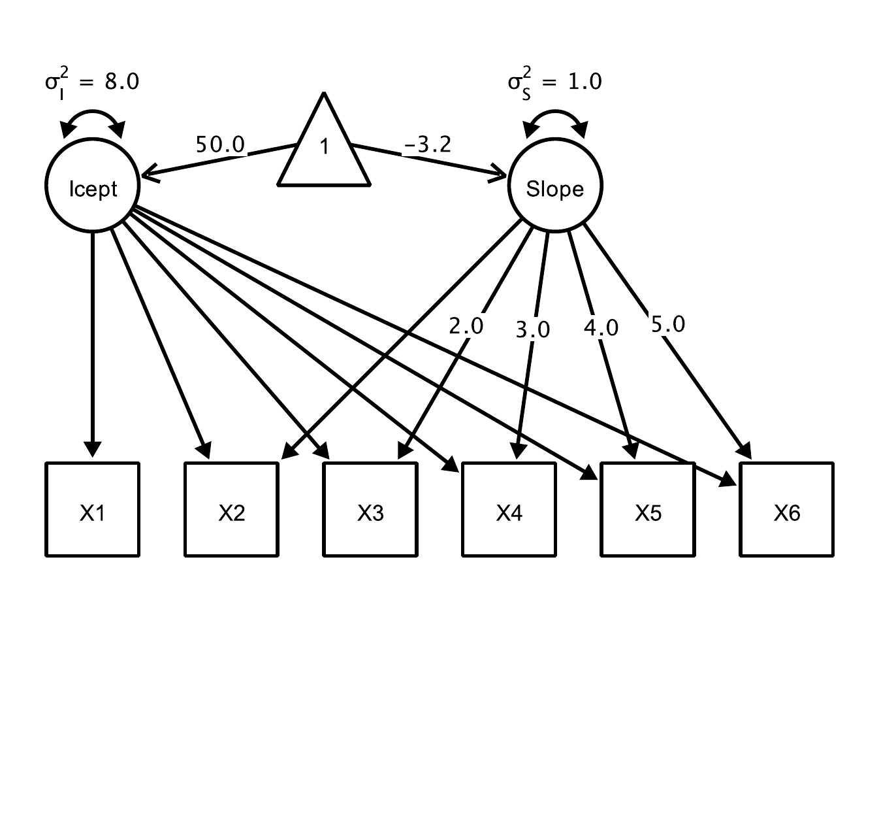
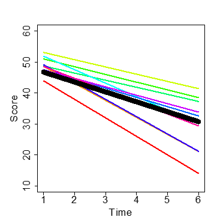
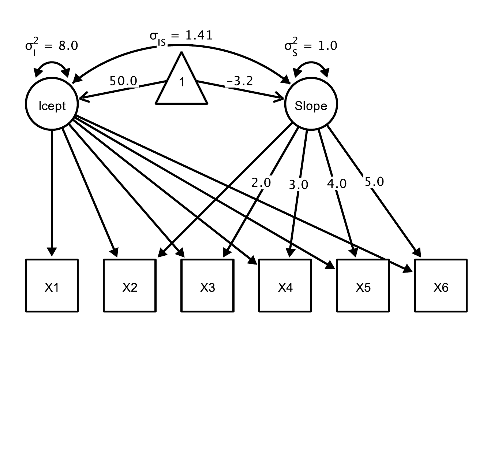
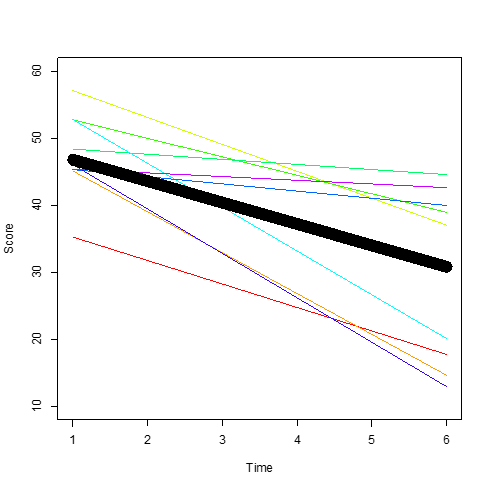
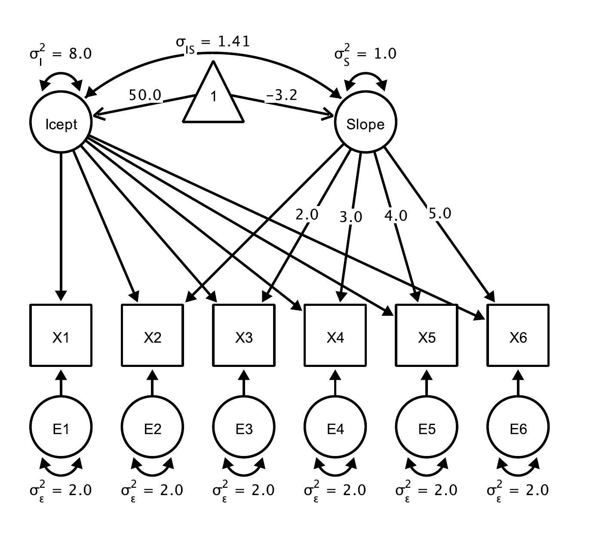
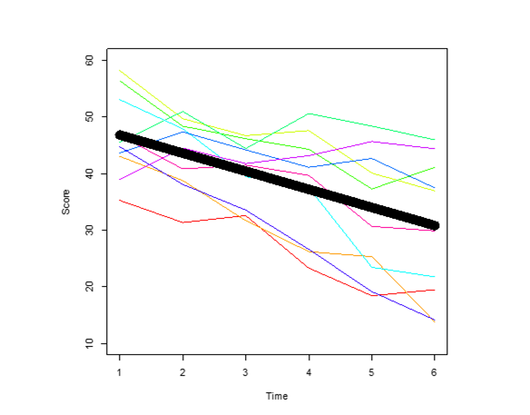
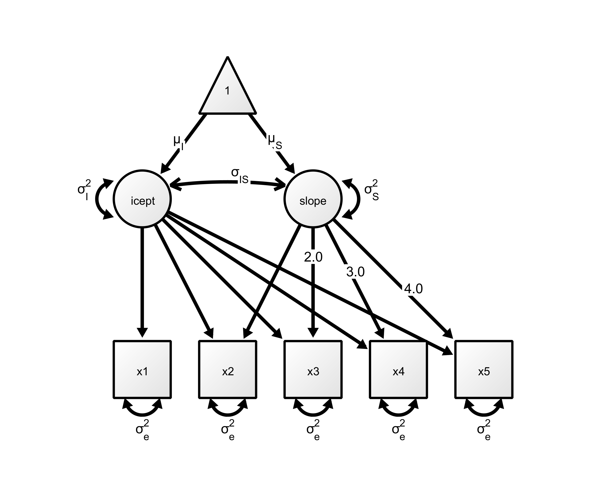
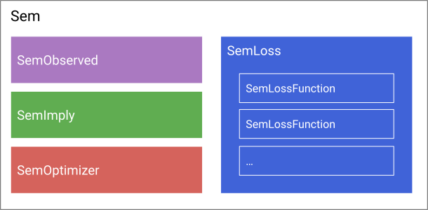

Part II - SEMs in Julia
Get familiar with “StructuralEquationModel.jl” (Ernst, Stukalov, Brandmaier, & Peikert, Submitted)








If you have not installed the package yet:
This may take some time on first loading:
Define symbols (remember that symbols start with a colon) for all observed and all latent variables:
Regression (with free parameter):
Covariance (with free parameter)
Variance
Means (using a constant one):
Using fixed(...) with a given value
For example, this fixes the path from x to y at a value of one:
Or, this fixes the covariance of a and b to zero:
evaluates to a → c, b → d.
is equivalent to saying a → c, a → d, b → c, b → d.
is equivalent to saying a ↔︎ a, a ↔︎ b, b ↔︎ b (, b ↔︎ a).
If you want to refer to a variable outside the Stenograph, you need to escape its name:
Graphs are defined using a Stenograph macro

graph = @StenoGraph begin
# Intercept factor: all loadings fixed to 1
i → fixed(1)*y1 + fixed(1)*y2 + fixed(1)*y3 + fixed(1)*y4
# Slope factor: linear time scores
s → fixed(0)*y1 + fixed(1)*y2 + fixed(2)*y3 + fixed(3)*y4
# Residual variances (free) and latent (co)variances (free)
_(obs) ↔ _(obs) # variances for observed variables
_(lat) ⇔ _(lat) # variances + covariance for latent factors
# Latent means (estimate μ_i and μ_s);
# observed means fixed to 0 by omission
Symbol(1) → i + s
endi → y1 * Fixed{Tuple{Int64}}((1,))
i → y2 * Fixed{Tuple{Int64}}((1,))
i → y3 * Fixed{Tuple{Int64}}((1,))
i → y4 * Fixed{Tuple{Int64}}((1,))
s → y1 * Fixed{Tuple{Int64}}((0,))
s → y2 * Fixed{Tuple{Int64}}((1,))
s → y3 * Fixed{Tuple{Int64}}((2,))
s → y4 * Fixed{Tuple{Int64}}((3,))
y1 ↔ y1 * nothing
y2 ↔ y2 * nothing
y3 ↔ y3 * nothing
y4 ↔ y4 * nothing
y5 ↔ y5 * nothing
i ↔ i * nothing
i ↔ s * nothing
s ↔ s * nothing
1 → i * nothing
1 → s * nothingThe specification above assumes heteroscedastic residual error variances. What about homoscedastic residual error variances?
-> Constraints
Or, use broadcasting with element-wise multiplication of two arrays:
-------- ---------- -------- ------- ------------- --------- ---------- -------
from relation to free value_fixed start estimate lab ⋯
Symbol Symbol Symbol Bool Float64 Float64 Float64 Symb ⋯
-------- ---------- -------- ------- ------------- --------- ---------- -------
i → y1 false 1.0 con ⋯
i → y2 false 1.0 con ⋯
i → y3 false 1.0 con ⋯
i → y4 false 1.0 con ⋯
s → y1 false 0.0 con ⋯
s → y2 false 1.0 con ⋯
s → y3 false 2.0 con ⋯
s → y4 false 3.0 con ⋯
y1 ↔ y1 true θ ⋯
y2 ↔ y2 true θ ⋯
y3 ↔ y3 true θ ⋯
y4 ↔ y4 true θ ⋯
y5 ↔ y5 true θ ⋯
i ↔ i true θ ⋯
i ↔ s true θ ⋯
⋮ ⋮ ⋮ ⋮ ⋮ ⋮ ⋮ ⋮ ⋱
-------- ---------- -------- ------- ------------- --------- ---------- -------
1 column and 3 rows omitted
Latent Variables: [:i, :s]
Observed Variables: [:y1, :y2, :y3, :y4, :y5] 
Fitted Structural Equation Model
===============================================
--------------------- Model -------------------
Structural Equation Model
- Loss Functions
SemML
- Fields
observed: SemObservedData
implied: RAM
------------- Optimization result -------------
* Status: success
* Candidate solution
Final objective value: 1.354715e+01
* Found with
Algorithm: L-BFGS
* Convergence measures
|x - x'| = 1.51e-04 ≰ 1.5e-08
|x - x'|/|x'| = 2.31e-05 ≰ 0.0e+00
|f(x) - f(x')| = 6.73e-10 ≰ 0.0e+00
|f(x) - f(x')|/|f(x')| = 4.97e-11 ≤ 1.0e-10
|g(x)| = 1.40e-05 ≰ 1.0e-08
* Work counters
Seconds run: 0 (vs limit Inf)
Iterations: 21
f(x) calls: 69
∇f(x) calls: 69 -------- ---------- -------- ------- ------------- --------- ------------ -----
from relation to free value_fixed start estimate l ⋯
Symbol Symbol Symbol Bool Float64 Float64 Float64 Sy ⋯
-------- ---------- -------- ------- ------------- --------- ------------ -----
i → y1 false 1.0 1.0 c ⋯
i → y2 false 1.0 1.0 c ⋯
i → y3 false 1.0 1.0 c ⋯
i → y4 false 1.0 1.0 c ⋯
s → y1 false 0.0 0.0 c ⋯
s → y2 false 1.0 1.0 c ⋯
s → y3 false 2.0 2.0 c ⋯
s → y4 false 3.0 3.0 c ⋯
y1 ↔ y1 true 4.09796 ⋯
y2 ↔ y2 true 4.08274 ⋯
y3 ↔ y3 true 4.32397 ⋯
y4 ↔ y4 true 4.6838 ⋯
y5 ↔ y5 true 6.5433 ⋯
i ↔ i true 1.0653 ⋯
i ↔ s true 0.240966 ⋯
⋮ ⋮ ⋮ ⋮ ⋮ ⋮ ⋮ ⋱
-------- ---------- -------- ------- ------------- --------- ------------ -----
1 column and 3 rows omitted
Latent Variables: [:i, :s]
Observed Variables: [:y1, :y2, :y3, :y4, :y5]
---------------------------------- Variables ---------------------------------
Latent variables: i s
Observed variables: y1 y2 y3 y4 y5
---------------------------- Parameter Estimates -----------------------------
Loadings:
i
to estimate value_fixed start free from label relation
y1 1.0 1.0 0.0 i const →
y2 1.0 1.0 0.0 i const →
y3 1.0 1.0 0.0 i const →
y4 1.0 1.0 0.0 i const →
s
to estimate value_fixed start free from label relation
y1 0.0 0.0 0.0 s const →
y2 1.0 1.0 0.0 s const →
y3 2.0 2.0 0.0 s const →
y4 3.0 3.0 0.0 s const →
Directed Effects:
from to estimate value_fixed start free label
Variances:
from to estimate value_fixed start free label
y1 ↔ y1 4.1 1.0 θ_1
y2 ↔ y2 4.08 1.0 θ_2
y3 ↔ y3 4.32 1.0 θ_3
y4 ↔ y4 4.68 1.0 θ_4
y5 ↔ y5 6.54 1.0 θ_5
i ↔ i 1.07 1.0 θ_6
s ↔ s -0.06 1.0 θ_8
Covariances:
from to estimate value_fixed start free label
i ↔ s 0.24 1.0 θ_7
Means:
from to estimate value_fixed start free label
1 → i 0.0 1.0 θ_9
1 → s 0.0 1.0 θ_10Assuming, we set up a nested model fitted_h0
This exercise sheet is targeted at social scientists who are interested in modeling change over time in the Julia programming language using the package StructuralEquationModels.jl.
Download the exercise sheet: https://raw.githubusercontent.com/brandmaier/lip2026-julia-workshop/main/exercises/exercise_sheet1.pdf
Download the data file: https://raw.githubusercontent.com/brandmaier/lip2026-julia-workshop/main/exercises/exercise_sheet1.csv
Your tasks: